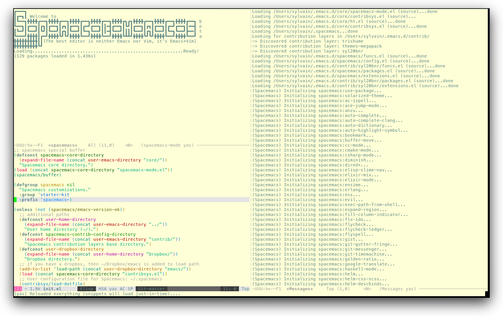
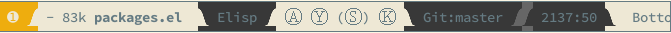

Spacemacs documentation
Table of ContentsClose
- 1. Core Pillars
- 2. Goals
- 3. Screenshots
- 4. Who can benefit from this?
- 5. Update and Rollback
- 6. Configuration layers
- 7. Dotfile Configuration
- 8. Main principles
- 9. Differences between Vim, Evil and Spacemacs
- 10. Evil plugins
- 11. Spacemacs UI
- 12. Commands
- 12.1. Vim key bindings
- 12.2. Reserved prefix command for user
- 12.3. Helm
- 12.4. Discovering
- 12.5. Navigating
- 12.6. Auto-saving
- 12.7. Searching
- 12.8. Editing
- 12.8.1. Paste text
- 12.8.2. Text manipulation commands
- 12.8.3. Text insertion commands
- 12.8.4. Smartparens Strict mode
- 12.8.5. Zooming
- 12.8.6. Increase/Decrease numbers
- 12.8.7. Spell checking
- 12.8.8. Region selection
- 12.8.9. Region narrowing
- 12.8.10. Line formatting
- 12.8.11. Replacing text with iedit
- 12.8.12. Replacing text in several files
- 12.8.13. Commenting
- 12.8.14. Deleting files
- 12.8.15. Editing Lisp code
- 12.9. Managing projects
- 12.10. Registers
- 12.11. Errors handling
- 12.12. Compiling
- 12.13. Modes
- 12.14. Emacs Server
- 12.15. Keeping the server alive
- 12.16. Troubleshoot
- 13. Achievements
- 14. Thank you
1 Core Pillars
Four core pillars: Mnemonic, Discoverability, Consistency, "Crowd-Configured".
If any of these core pillars is violated open an issue and we'll fix it.
1.1 Mnemonic
Spacemacs organizes key bindings by mnemonic namespaces as much as possible.
If you are looking for commands to operate on your buffer, they are right under
SPC b, if you want to operate on your project, then it is SPC p, etc…
1.2 Discoverable
Spacemacs comes with a dedicated major mode spacemacs-mode. Its goal is to
give useful feedbacks and easily perform maintenance tasks.
It also comes with dedicated helm sources to quickly find layers, packages and more.
which-key is enabled by default, it will display all the available key bindings in a dedicated popup buffer.
1.3 Consistent
Similar functionalities should have the same key binding no matter which major
is currently active. For instance if you are looking for the definition of a
function, the binding is SPC m g g, m for major mode and g g for go to
thing at point. No matter what is the major mode it is the same binding to
perform this action.
This is also true for the documentation, each configuration layer comes with an
associated README.org file with the same base layout.
The consistency core pillar is supported by a convention file: CONVENTIONS
1.4 Crowd-Configured
By defining an very light structure called configuration layer which is easy
to understand, Spacemacs makes it easy to contribute additional support.
The conventions in CONVENTIONS make it easy to get the spacemacs way and keep consistency even if there are a lot of contributions.
Crowd-configuration is the most powerful pillar of Spacemacs. Anybody can
submit upstream improvements to configuration layers or a whole new one. Any
user can easily and directly use this layer by adding it to a list in a dotfile.
It is even possible to exclude any unwanted packages.
2 Goals
- Bring the power of modal editing to the powerful Emacs editing platform.
- Integrate nicely with
Evilstates (Vimmodes): Spacemacs tries to keep your fingers on the home row as much as possible, no matter the mode you are in. - Crowd-configured: Contribute easily your improvements and new configuration layers.
- Minimalistic and nice graphical UI, keep your available screen space for what matters: your text files.
- Mnemonic and consistent key bindings which should be easier to learn and remember and be the same in all major modes.
- Fast boot time, everything is lazy-loaded.
- Lower the risk of RSI by heavily using the space bar instead of modifiers.
Hopefully, if it's not already the case:
Ɛ>Ɛ>Ɛ> make you love modal editing! <3<3<3
3 Screenshots
Startup 
Python 
Terminal (urxvt) 
Note: Even though screenshots are updated frequently, Spacemacs is evolving quickly and the screenshots may not reflect exactly the current state of the project.
4 Who can benefit from this?
Spacemacs is first intended to be used by Vim users who want to go to the next level by using Emacs. There is a guide for these users to supplement the documentation.
It is also a good fit for people wanting to lower the risk of RSI induced by the default Emacs key bindings (this is an assumption, there are no official studies to prove this).
Emacs users wanting to learn a different way to edit files or wanting to learn Vim key bindings.
Emacs users who want a neatly organized configuration to go along with the default Emacs keybindings (Yes, Spacemacs can be used without Vim keybindings).
As a side note, if you are a programmer and you don't know Vim key bindings yet, I deeply recommend you to learn the basics as recommended in Sacha Chua's one-page guide about how to learn Emacs.
5 Update and Rollback
5.1 Update Spacemacs repository
There are several methods of updating the core files and layer information for Spacemacs. It is recommended to update the packages first, see the next section.
5.1.1 Automatic Updates
Spacemacs will automatically check for a new version every startup. When it detects that a new version is available a arrow will appear in the modeline. Click it to update Spacemacs. You must restart Emacs after updating.
Update Button:

Note: If you use the develop branch of Spacemacs, you must update using git.
5.1.2 Updating from the Spacemacs Buffer
Use the button labeled "Update Spacemacs" in the Spacemacs buffer. You will be prompted for the version you would like to use.
Note: If you use the develop branch of Spacemacs, you cannot use this method.
5.1.3 Updating Manually with git
To update manually close Emacs and update the git repository:
$ git pull --rebase
5.2 Update packages
To update the Emacs packages used by Spacemacs press RET (enter) or click on the
link [Update Packages] in the startup page under the banner then restart
Emacs. If you prefer, you can use the command
configuration-layer/update-packages instead of the button.
If anything goes wrong you should be able to rollback the update by pressing
RET or clicking on the [Rollback Package Update] link next to the [Update
Packages] link and choose a rollback slot (sorted by date). This button uses
the command configuration-layer/rollback.
6 Configuration layers
Note: This is a very simple overview of how layers work. A more extensive introduction to writing configuration layers can be found here.
6.1 Purpose
Layers help collect related packages together to provide features. For example,
the python layer provides auto-completion, syntax checking, and repl support
for python files. This approach helps keep configuration organized and reduces
overhead for the user by keeping them from having to think about what packages
to install
6.2 Structure
Configuration is organized in layers. Each layer has the following structure:
[layer_name] |__ [local] | |__ [package 1] | | ... | |__ [package n] |__ config.el |__ funcs.el |__ keybindings.el |__ packages.el [] = directory
Where:
| File | Usage |
|---|---|
| config.el | Emacs built-in configuration or mandatory configuration |
| funcs.el | Various functions and macros (often used in keybindings.el) |
| keybindings.el | Emacs built-in key bindings or mandatory key bindings |
| packages.el | The list of packages to install and the functions to initialize them |
Packages are ELPA packages which can be installed from an ELPA compliant
repository, local packages in a layer's local folder, or packages that can be
installed from an online source using [[https://github.com/quelpa/quelpa][quelpa]].
6.3 Packages
6.3.1 Within a layer
6.3.1.1 Declaration
Packages are declared in variables and <layer>-packages where <layer> is
the layer name. They are processed in alphabetical order so sometimes you'll
have to use some eval-after-load black magic.
Example:
(setq <layer>-packages '(package1 package2 ...)
For details on installing local packages using quelpa or in the layer's local
folder, see LAYERS.
6.3.1.2 Initialization
To initialize an extension or a package xxx, define a function with this
format in or packages.el:
(defun <layer>/init-xxx () ...body )
It is common to define the body with the use-package macro.
6.3.1.3 Exclusion
It is possible to exclude some packages from Spacemacs on a per layer basis. This is useful when a configuration layer aims to replace a stock package declared in the Spacemacs layer.
To do so add the package names to exclude to the variable
<layer>-excluded-packages.
Example:
(setq <layer>-excluded-packages '(package1 package2 ...)
6.3.2 Without a layer
Sometimes a layer can be an unnecessary overhead, this is the case if you just want to install a package without any configuration associated to it. A good example is some niche language where you are only interested syntax highlighting.
You can install such packages by adding them to the variable
dotspacemacs-additional-packages in your dotfile.
If you want to add some configuration for them then consider to create a layer,
or just put the configuration in the dotspacemacs/user-config function.
Example to install llvm-mode and dts-mode:
(setq dotspacemacs-additional-packages '(llvm-mode dts-mode)
6.4 Packages synchronization (Vundle like feature)
Spacemacs features a synchronization engine for the ELPA packages. It means
that Spacemacs will auto-install the new packages in <layer>-packages lists
and auto-delete orphan packages in your elpa directory.
It effectively makes Spacemacs behave like Vundle.
6.5 Types of configuration layers
There are three types of configuration layers:
- core (this is the Spacemacs layer)
- private (in the
privatedirectory, they are ignored by Git) - contrib (in the
layersdirectory, those layers are contributions shared by the community and merged upstream).
6.6 Submitting a configuration layer upstream
If you decide to provide a contrib configuration layer, please check the
contribution guidelines in CONTRIBUTE.
6.7 Example: Themes Megapack example
This is a simple contrib configuration layer listing a bunch of themes, you
can find it here.
To install it, just add themes-megapack to your ~/.spacemacs like so:
(setq-default dotspacemacs-configuration-layers '(themes-megapack))
You have now installed around 100 themes you are free to try with SPC T h
(helm-themes).
6.8 Managing private configuration layers
Spacemacs configuration system is flexible enough to let you manage your private layers in different ways.
6.8.1 Using the private directory
Everything in the private directory is ignored by Git so it is a good place to store private layers. There is a huge drawback to this approach though: your layers are not source controlled.
6.8.2 Using an external Git repository
This is the recommended way to manage your private layers.
The best approach is to store all your private layers into an external Git
repository. It is especially a good practice to store them in your dotfiles
repository if you have one. Put also your ~/.spacemacs file in it.
Then you are free to symlink your layers into ~/emacs.d/private or let them
anywhere you want and reference the parent directory in the variable
dotspacemacs-configuration-layer-path of your ~/.spacemacs.
Note that you could also have a dedicated repository for all your private layers
and then directly clone this repository in ~/.emacs.d/private.
6.8.3 Using a personal branch
The final main way to manage your private layers is to push them in a personal
branch that you keep up to date with upstream master or develop.
6.9 Tips for writing layers
Please refer to this introduction for some tips on writing layers, and how to best make them fit with the Spacemacs philosophy and loading strategy.
7 Dotfile Configuration
User configuration can be stored in your ~/.spacemacs file.
7.1 Installation
The very first time Spacemacs starts up, it will prompt you to choose your
editing style. Once you choose a style, the .spacemacs file will be created
from a template.
7.1.1 Alternative setup
Since v0.104 you have the option of using ~/.spacemacs.d/init.el for your
dotfile instead of ~/.spacemacs. If you want to use this option, simply move
~/.spacemacs to ~/.spacemacs.d/init.el. ~/.spacemacs will always take
priority over ~/.spacemacs.d/init.el, so ~/.spacemacs must be missing for
~/.spacemacs.d/init.el to be used by spacemacs.
If you use this option, everything that applies to ~/.spacemacs in this guide
will now apply to ~/.spacemacs.d/init.el.
It is also possible to override the location of ~/.spacemacs.d/ using the
environment variable SPACEMACSDIR. Of course you can also use symlinks to
change the location of this directory.
7.2 Synchronization of dotfile changes
To apply the modifications made in ~/.spacemacs press SPC f e R. It will
re-execute the Spacemacs initialization process.
Note: A synchronization re-executes the functions dotspacemacs/init and
dotspacemacs/user-config. Depending on the content of this functions you may
encounter some unwanted side effects. For instance if you use a toggle in
dotspacemac/user-config to enable some behavior, this behavior will be turned
off whenever the dotfile is re-synchronized. To avoid these side-effects it is
recommended to either use setq expressions instead of toggle functions, or to
use the on or off versions instead (i.e. instead of
spacemacs/toggle-<thing>, use spacemacs/toggle-<thing>-on or
spacemacs/toggle-<thing>-off). It is possible to skip the execution of
dotspacemacs/user-config with the universal argument (SPC u SPC f e R).
7.3 Testing
You can use the command SPC : dotspacemacs/test-dotfile to check if your
~/.spacemacs looks correct. This will check, among other things, whether the
declared layers can be found and that the variables have sensible values. These
tests are also run automatically when you synchronize with SPC f e R.
7.4 Content
7.4.1 Using configuration layers
To use a configuration layer, add it to the dotspacemacs-configuration-layers
variable of your ~/.spacemacs.
For instance to add the configuration layer of RMS:
(setq-default dotspacemacs-configuration-layers '(rms))
If this layer does not exist you can still try another one in the layers
directory.
Configuration layers are expected to be stored in ~/.emacs.d/private or
~/.emacs.d/layers. But you are free to keep them somewhere else by declaring
additional paths where Spacemacs can look for configuration layers. This is
done by setting the list dotspacemacs-configuration-layer-path in your
~/.spacemacs:
(setq-default dotspacemacs-configuration-layer-path '("~/.myconfig/"))
7.4.2 Setting configuration layers variables
Some configuration layers have configuration variables to enable specific
support. For instance the git layer has several configuration variables, they
can be set directly in the dotspacemacs-configuration-layers like this:
(defun dotspacemacs/layers () ;; List of configuration layers to load. (setq-default dotspacemacs-configuration-layers '(auto-completion (git :variables git-magit-status-fullscreen t) smex)))
7.4.3 Excluding packages
You can exclude packages you don't want to install with the variable
dotspacemacs-excluded-packages, this variable can exclude both packages and
extensions (see Configuration layers for more info on
packages and extensions).
For instance to disable the rainbow-delimiters package:
(setq-default dotspacemacs-excluded-packages '(rainbow-delimiters))
When you exclude a package, Spacemacs will automatically delete it for you the next time you launch Emacs. All the orphan dependencies are as well delete automatically.
7.4.4 Hooks
Three special functions of the ~/.spacemacs file can be used to perform
configuration at the beginning and end of Spacemacs loading process.
dotspacemacs/initis triggered at the very beginning of Spacemacs loading. You can configure Spacemacs variables here.dotspacemacs/user-initis also triggered at the very beginning of Spacemacs loading. User initialization occurs here.dotspacemacs/user-configis triggered at the very end of Spacemacs loading. Most user configuration should go here.
7.4.5 Binding keys
Key sequences are bound to commands in Emacs in various keymaps. The most basic
map is the global-map. Setting a key binding the global-map uses the function
global-set-key as follows (to the command forward-char in this case).
(global-set-key (kbd "C-]") 'forward-char)
The kbd macro accepts a string describing a key sequence. The global-map is
often shadowed by other maps. For example, evil-mode defines keymaps that target
states (or modes in vim terminology). Here is an example that creates the same
binding as above but only in insert state (define-key is a built-in function.
Evil-mode has its own functions for defining keys).
(define-key evil-insert-state-map (kbd "C-]") 'forward-char)
Perhaps most importantly for spacemacs is the use of the evil-leader package, which binds keys to the evil-leader keymap. This is where most of the spacemacs bindings live. There are two related commands from this package which are used as follows.
(evil-leader/set-key "C-]" 'forward-char) (spacemacs/set-leader-keys-for-major-mode 'emacs-lisp-mode "C-]" 'forward-char)
These functions use a macro like kbd to translate the key sequences for you.
The second function, spacemacs/set-leader-keys-for-major-mode, binds the key only in the
specified mode. The second key binding would not be in effect in org-mode for
example.
Finally, one should be aware of prefix keys. Essentially, all keymaps can be
nested. Nested keymaps are used extensively in spacemacs, and in vanilla Emacs
for that matter. For example, SPC a points to key bindings for "applications",
like SPC ac for calc-dispatch. Nesting bindings is easy.
(spacemacs/declare-prefix "]" "bracket-prefix") (evil-leader/set-key "]]" 'double-bracket-command)
The first line declares SPC ] to be a prefix and the second binds the key
sequence SPC ]] to the corresponding command. The first line is actually
unnecessary to create the prefix, but it will give your new prefix a name that
key-discovery tools can use (e.g., which-key).
There is much more to say about bindings keys, but these are the basics. Keys
can be bound in your ~/.spacemacs file or in individual layers.
7.4.6 Custom variables
Custom variables configuration from M-x customize-group which are
automatically saved by Emacs are stored at the end of your ~/.spacemacs file.
8 Main principles
8.1 Editing Styles
8.1.1 Vim
Spacemacs behaves like in Vim using Evil mode package to emulate Vim key bindings.
This is the default style of Spacemacs, it can be set explicitly by setting
the dotspacemacs-editing-style variable to vim in the dotfile.
8.1.2 Emacs
Spacemacs behaves like in raw Emacs using the Holy mode which configures Evil to
make the emacs state the default state everywhere.
Set the dotspacemacs-editing-style variable to emacs in the dotfile.
In Emacs style the leader is available on M-m. It is possible to dynamically
switch between evil and holy mode using SPC t E h and M-m t E h.
8.1.3 Hybrid
The hybrid editing style is like the Vim style except that insert state
has all the Emacs key bindings available like in emacs state. The insert state
in hybrid mode is called the hybrid state and you have to map your key bindings
in evil-hybrid-state-map keymap instead of evil-insert-state-map.
Hybrid mode can be enabled by setting dotspacemacs-editing-style to hybrid.
To switch between evil and hybrid mode use SPC t E y and M-m t E y.
8.2 Evilified modes
Some buffers (such as Magit, for using git from within Emacs), are not for
editing text, and provide their own keybindings for certain operations. These
often conflict with Vim bindings. To make such buffers behave Vim-like in a
consistent manner, they use a special state called evilified state. In
evilified state, a handful of keys work as in Evil, namely /, :, h, j,
k, l, n, N, v, V, gg, G, C-f, C-b, C-d, C-u and C-z.
All other keys work as intended by the underlying mode.
Shadowed keys are moved according to the pattern: a → A → C-a → C-A
For example, if the mode binds a function to n, that is found under C-n in
evilified state, since both n and N are reserved, but C-n is not. On the
other hand, anything originally bound to k will be found on K, since k is
reserved but K is not. If there is a binding on K, that will be moved to
C-k.
In addition to this, C-g, being an important escape key in Emacs, is skipped.
So anything bound to g originally will be found on C-G, since g, G and
C-g are all reserved.
8.3 States
Spacemacs has 10 states:
| State | Color | Description |
|---|---|---|
| normal | orange | like the normal mode of Vim, used to execute and combine commands |
| insert | green | like the insert mode of Vim, used to actually insert text |
| visual | gray | like the visual mode of Vim, used to make text selection |
| motion | purple | exclusive to Evil, used to navigate read only buffers |
| emacs | blue | exclusive to Evil, using this state is like using a regular Emacs without Vim |
| replace | chocolate | exclusive to Evil, overwrites the character under point instead of inserting a new one |
| hybrid | blue | exclusive to Spacemacs, this is like the insert state except that all the emacs key bindings are available |
| evilified | light brown | exclusive to Spacemacs, this is an emacs state modified to bring Vim navigation, selection and search. |
| lisp | pink | exclusive to Spacemacs, used to navigate Lisp code and modify it (more info) |
| iedit | red | exclusive to Spacemacs, used to navigate between multiple regions of text using iedit (more info) |
| iedit-insert | red | exclusive to Spacemacs, used to replace multiple regions of text using iedit (more info) |
Note: Technically speaking there is also the operator evil state.
8.4 Evil leader
Spacemacs heavily uses the evil-leader mode which brings the Vim leader key to the Emacs world.
This leader key is commonly set to ~,~ by Vim users, in Spacemacs the leader
key is set on SPC (space bar, hence the name spacemacs). This key is the
most accessible key on a keyboard and it is pressed with the thumb which is a
good choice to lower the risk of RSI.
So with Spacemacs there is no need to remap your keyboard modifiers to attempt
to reduce the risk of RSI, every command can be executed very easily while you
are in normal mode by pressing the SPC leader key, here are a few examples:
- Save a buffer:
SPC f s - Save all opened buffers:
SPC f S - Open (switch) to a buffer with
helm:SPC b b
8.5 Universal argument
The universal argument C-u is an important command in Emacs but it is also a
very handy Vim key binding to scroll up.
Spacemacs binds C-u to scroll-up and change the universal argument binding
to SPC u.
Note: SPC u is not working before helm-M-x (SPC :). Instead, call
helm-M-x first, select the command you want to run, and press C-u before
pressing RETURN. For instance: SPC : org-reload C-u RET
8.6 Micro-states
Spacemacs defines a wide variety of micro-states (temporary overlay maps)
where it makes sense. This prevents one from doing repetitive and tedious
presses on the SPC key.
When a micro-state is active, a documentation is displayed in the minibuffer.
Additional information may as well be displayed in the minibuffer.
Auto-highlight-symbol micro-state:


9 Differences between Vim, Evil and Spacemacs
- The ~,~ key does "repeat last
f,t,F, orTcommand in opposite direction inVim, but in Spacemacs it is the major mode specific leader key by default (which can be set on another key binding in the dotfile). - The
Ykey does not yank the whole line. It yanks from the current point to the end of the line. This is more consistent with the behavior ofCandDand is also recommended by the vim documentation.
Send a PR to add the differences you found in this section.
9.1 The vim-surround case
There is one obvious visible difference though. It is not between Evil and
Vim but between Spacemacs and vim-surround: the surround command is on S
in vim-surround whereas it is on s in Spacemacs.
This is something that can surprise some Vim users so let me explain why this is the case:
sandcdo the same thing invisual state,sis only useful to delete one character and add more than one character which is a very narrow use casecaccept motions and can do everythingscan do innormal state- this is also true for
rbutris more useful because it stays innormal state
- this is also true for
surroundcommand is just a more powerful command thans.
If you are not convinced, then here is the snippet to revert back to the default
Vim + vim-surround setup (add it to your dotspacemacs/user-config function or
your ~/.spacemacs):
(evil-define-key 'visual evil-surround-mode-map "s" 'evil-substitute) (evil-define-key 'visual evil-surround-mode-map "S" 'evil-surround-region)
10 Evil plugins
Spacemacs ships with the following evil plugins:
| Mode | Description |
|---|---|
| evil-leader | vim leader that bring a new layer of keys in normal mode |
| evil-indent-textobject | add text object based on indentation level |
| evil-visualstar | search for current selection with * |
| evil-exchange | port of vim-exchange |
| evil-surround | port of vim-surround |
| evil-matchit | port of matchit.vim |
| evil-nerd-commenter | port of nerdcommenter |
| evil-search-highlight-persist | emulation of hlsearch behavior |
| evil-numbers | like C-a and C-x in vim |
| evil-args | motions and text objects for arguments |
| evil-jumper | jump list emulation |
| NeoTree | mimic NERD Tree |
11 Spacemacs UI
Spacemacs has unique UI elements to make the Emacs experience even more enjoyable:
- dedicated startup page with a mode aimed at easily managing Spacemacs
- dedicated helm source via
helm-spacemacs - a which-key buffer
11.1 Graphical UI
Spacemacs has a minimalistic and distraction free graphical UI:
- custom powerline mode-line with color feedback according to current Flycheck status
- Unicode symbols for minor mode lighters which appear in the mode-line
- custom fringe bitmaps and error feedbacks for Flycheck
11.1.1 Color themes
The official Spacemacs theme is spacemacs-dark and it is the default theme
installed when you first started Spacemacs. There are two variants of the
theme, a dark one and a light one. Some aspect of these themes can be customized
in the function dotspacemacs/user-init of your ~/.spacemacs:
- the comment background with the boolean
spacemacs-theme-comment-bg - the height of org section titles with
spacemacs-theme-org-height
It is possible to define your default themes in your ~/.spacemacs with the
variable dotspacemacs-themes. For instance, to specify solarized-light,
leuven and zenburn:
(setq-default dotspacemacs-themes '(solarized-light leuven zenburn))
| Key Binding | Description |
|---|---|
SPC T n |
switch to next theme listed in dotspacemacs-themes. |
SPC T h |
select a theme using a helm buffer. |
You can see samples of all included themes in this theme gallery from Rob Merrell.
Note:
- You don't need to explicitly list in a layer the theme packages you are
defining in
dotspacemacs-themes, Spacemacs is smart enough to remove those packages from the list of orphans. - Due to the inner working of themes in Emacs, switching theme during the same session may have some weird side effects. Although these side effects should be pretty rare.
- In the terminal version of Emacs, color themes will not render correctly as colors are rendered by the terminal and not by emacs. You will probably have to change your terminal color palette. More explanations can be found on emacs-color-theme-solarized webpage.
Hint: If you are an Org user, leuven-theme is amazing ;-)
11.1.2 Font
The default font used by Spacemacs is Source Code Pro by Adobe. It is recommended to install it on your system.
To change the default font set the variable dotspacemacs-default-font in your
.spacemacs file.
By default its value is:
(setq-default dotspacemacs-default-font '("Source Code Pro" :size 13 :weight normal :width normal :powerline-scale 1.1))
The properties should be pretty straightforward, it is possible to set any valid property of a font-spec:
:familyFont family or fontset (a string).:widthRelative character width. This should be one of the symbols:- ultra-condensed
- extra-condensed
- condensed
- semi-condensed
- normal
- semi-expanded
- expanded
- extra-expanded
- ultra-expanded
:heightThe height of the font. In the simplest case, this is an integer in units of 1/10 point.:weightFont weight- one of the symbols (from densest to faintest):- ultra-bold
- extra-bold
- bold
- semi-bold
- normal
- semi-light
- light
- extra-light
- ultra-light
:slantFont slant- one of the symbols:- italic
- oblique
- normal
- reverse-italic
- reverse-oblique
:sizeThe font size- either a non-negative integer that specifies the pixel size, or a floating-point number that specifies the point size.:adstyleAdditional typographic style information for the font, such as 'sans'. The value should be a string or a symbol.:registryThe charset registry and encoding of the font, such as 'iso8859-1'. The value should be a string or a symbol.:scriptThe script that the font must support (a symbol).
The special property :powerline-scale is Spacemacs specific and it is for
quick tweaking of the mode-line height in order to avoid crappy rendering of the
separators like on the following screenshot (default value is 1.1).
Ugly separators

11.1.3 Graphical UI Toggles
Some graphical UI indicators can be toggled on and off (toggles start with t
and T):
| Key Binding | Description |
|---|---|
SPC t f |
display the fill column (by default the fill column is set to 80) |
SPC t h h |
toggle highlight of the current line |
SPC t h i |
toggle highlight indentation levels |
SPC t h c |
toggle highlight indentation current column |
SPC t i |
toggle indentation guide at point |
SPC t l |
toggle truncate lines |
SPC t L |
toggle visual lines |
SPC t n |
toggle line numbers |
| Key Binding | Description |
|---|---|
SPC T ~ |
display ~ in the fringe on empty lines |
SPC T F |
toggle frame fullscreen |
SPC T f |
toggle display of the fringe |
SPC T m |
toggle menu bar |
SPC T M |
toggle frame maximize |
SPC T t |
toggle tool bar |
SPC T T |
toggle frame transparency and enter transparency micro-state |
Note: These toggles are all available via the helm-spacemacs interface (press
SPC f e h to display the helm-spacemacs buffer).
11.1.3.1 Global line numbers
Line numbers can be toggled on in all prog-mode and text-mode buffers by
setting the dotspacemacs-line-numbers variable in your ~/.spacemacs
to something different than nil.
(setq-default dotspacemacs-line-numbers t)
If it is set to relative, line numbers are show in a relative way:
(setq-default dotspacemacs-line-numbers 'relative)
11.1.4 Mouse usage
There are some added mouse features set for the line number margin (if shown):
- single click in line number margin visually selects the entire line
- drag across line number margin visually selects the region
- double click in line number margin visually select the current code block
11.1.5 Mode-line
The mode line is a heavily customized powerline with the following capabilities:
- show the window number
- color code for current state
- show the number of search occurrences via anzu
- toggle flycheck info
- toggle battery info
- toggle minor mode lighters
Reminder of the color codes for the states:
| Evil State | Color |
|---|---|
| Normal | Orange |
| Insert | Green |
| Visual | Grey |
| Emacs | Blue |
| Motion | Purple |
| Replace | Chocolate |
| Lisp | Pink |
| Iedit/Iedit-Insert | Red |
Some elements can be dynamically toggled:
| Key Binding | Description |
|---|---|
SPC t m b |
toggle the battery status |
SPC t m c |
toggle the org task clock (available in org layer) |
SPC t m m |
toggle the minor mode lighters |
SPC t m M |
toggle the major mode |
SPC t m n |
toggle the cat! (if colors layer is declared in your dotfile) |
SPC t m p |
toggle the point character position |
SPC t m t |
toggle the mode line itself |
SPC t m v |
toggle the version control info |
SPC t m V |
toggle the new version lighter |
11.1.5.1 Powerline font installation for terminal-mode users
Users who run Emacs in terminal mode may need to install the Powerline patched fonts and configure their terminal clients to use them to make the Powerline separators render correctly.
11.1.5.2 Flycheck integration
When Flycheck minor mode is enabled, a new element appears showing the number of errors, warnings and info.

11.1.5.3 Anzu integration
Anzu shows the number of occurrence when performing a search. Spacemacs
integrates nicely the Anzu status by displaying it temporarily when n or N
are being pressed. See the 5/6 segment on the screenshot below.

11.1.5.4 Battery status integration
fancy-battery displays the percentage of total charge of the battery as well as the time remaining to charge or discharge completely the battery.
A color code is used for the battery status:
| Battery State | Color |
|---|---|
| Charging | Green |
| Discharging | Orange |
| Critical | Red |
Note the these colors may vary depending on your theme.
11.1.5.5 Powerline separators
It is possible to easily customize the powerline separator by setting the
powerline-default-separator variable in your ~./spacemacs. For instance if
you want to set back the separator to the well-known arrow separator add the
following snippet to your configuration file:
(defun dotspacemacs/user-config () "This is were you can ultimately override default Spacemacs configuration. This function is called at the very end of Spacemacs initialization." (setq powerline-default-separator 'arrow))
To save you the time to try all the possible separators provided by the powerline, here is an exhaustive set of screenshots:
| Separator | Screenshot |
|---|---|
alternate |
 |
arrow |
|
arrow-fade |
|
bar |
 |
box |
 |
brace |
 |
butt |
|
chamfer |
 |
contour |
 |
curve |
 |
rounded |
 |
roundstub |
|
slant |
 |
wave |
|
zigzag |
|
nil |
 |
11.1.5.6 Minor Modes
Spacemacs uses diminish mode to reduce the size of minor mode indicators:
The minor mode area can be toggled on and off with SPC t m m
Unicode symbols are displayed by default. Setting the variable
dotspacemacs-mode-line-unicode-symbols to nil in your ~/.spacemacs will
display ASCII characters instead (may be useful in terminal if you cannot set an
appropriate font).
The letters displayed in the mode-line correspond to the key bindings used to toggle them.
Some toggle have two flavors: local and global. The global version of the toggle
can be reached using the control key.
| Key Binding | Unicode | ASCII | Mode |
|---|---|---|---|
SPC t - |
⊝ |
- | centered-cursor mode |
SPC t C-- |
⊝ |
global centered cursor | |
SPC t a |
ⓐ |
a | auto-completion |
SPC t c |
ⓒ |
c | camel case motion with subword mode |
none |
ⓔ |
e | evil-org mode |
SPC t E e |
Ⓔe |
Ee | emacs editing style (holy mode) |
SPC t E h |
Ⓔh |
Eh | hybrid editing style (hybrid mode) |
SPC t f |
fill-column-indicator mode | ||
SPC t F |
Ⓕ |
F | auto-fill mode |
SPC t g |
ⓖ |
g | golden-ratio mode |
SPC t h i |
ⓗi |
hi | toggle highlight indentation levels |
SPC t h c |
ⓗc |
hc | toggle highlight indentation current column |
SPC t i |
ⓘ |
i | indentation guide |
SPC t C-i |
ⓘ |
i | global indentation guide |
SPC t I |
Ⓘ |
I | aggressive indent mode |
SPC t K |
Ⓚ |
K | which-key mode |
SPC t p |
ⓟ |
p | smartparens mode |
SPC t C-p |
ⓟ |
global smartparens | |
SPC t s |
ⓢ |
s | syntax checking (flycheck) |
SPC t S |
Ⓢ |
S | enabled in spell checking layer (flyspell) |
SPC t w |
ⓦ |
w | whitespace mode |
SPC t C-w |
Ⓦ |
W | global whitespace |
SPC t y |
ⓨ |
y | yasnippet mode |
11.1.5.7 Customizing the mode-line
Spacemacs uses Spaceline to provide its mode-line. It consists of a number of
segments arranged on the left and right sides. These are defined in the
variables spaceline-left and spaceline-right. Segments can be defined using
spaceline-define-segment, and added to the appropriate location in the left or
right hand side variables.
Please see the Spaceline documentation for more information.
12 Commands
12.1 Vim key bindings
Spacemacs is based on Vim modal user interface to navigate and edit text. If
you are not familiar with the Vim way of editing text you can try the
evil-tutor lessons by pressing SPC h T at any time.
12.1.1 Escaping
Spacemacs uses evil-escape to
easily switch between insert state and normal state by quickly pressing the
fd keys.
The choice of fd was made to be able to use the same sequence to escape from
"everything" in Emacs:
- escape from all stock evil states to normal state
- escape from evil-lisp-state to normal state
- escape from evil-iedit-state to normal state
- abort evil ex command
- quit minibuffer
- abort isearch
- quit magit buffers
- quit help buffers
- quit apropos buffers
- quit ert buffers
- quit undo-tree buffer
- quit paradox
- quit gist-list menu
- quit helm-ag-edit
- hide neotree buffer
If you find yourself in a buffer where the Spacemacs (SPC) or Vim
keybindings don't work you can use this to get back to normal state (for
example in SPC : customize press fd to make SPC b b work again).
This sequence can be customized in your ~/.spacemacs.
Example to set it to jj:
(defun dotspacemacs/user-config () (setq-default evil-escape-key-sequence "jj"))
Note: Although jj or jk are popular choices of vim users, these key
sequences are not optimal for Spacemacs. Indeed it is very easy in visual
state to press quickly jj and inadvertently escape to normal state.
12.1.2 Executing Vim and Emacs ex/M-x commands
| Command | Key Binding |
|---|---|
| Vim (ex-command) | : |
| Emacs (M-x) | SPC : |
The command key : can be easily changed with the variable
dotspacemacs-command-key of your ~/.spacemacs. Note that is will change both
: and SPC : bindings to keep the symmetry between Vim and Emacs. A good key
can be ~,~ for example.
12.1.3 Leader key
On top of Vim modes (modes are called states in Spacemacs) there is a
special key called the leader key which once pressed gives a whole new keyboard
layer. The leader key is by default SPC (space). It is possible to change this
key with the variable dotspacemacs-leader-key.
12.1.4 Additional text objects
Additional text objects are defined in Spacemacs:
| Object | Description |
|---|---|
a |
an argument |
g |
the entire buffer |
$ |
text between $ |
* |
text between * |
8 |
text between /* and */ |
% |
text between % |
\vert |
text between \vert |
12.2 Reserved prefix command for user
SPC o and SPC m o are reserved for the user. Setting key bindings behind
these is guaranteed to never conflict with Spacemacs default key bindings.
Example: Put (evil-leader/set-key "oc" 'org-capture) inside
dotspacemacs/user-config in your ~/.spacemacs file, to be able to use SPC o
c to run org mode capture.
12.3 Helm
Spacemacs is powered by Helm which is an incremental completion and selection narrowing framework.
Helm is the central control tower of Spacemacs, it is used to manage
buffers, projects, search results, configuration layers, toggles and more…
Mastering Helm will make you a Spacemacs power user. Do not hesitate to read
the Helm documentation wiki.
12.3.1 C-z and Tab switch
The command bound to C-z is much more useful than the one bound to Tab, so it
makes sense to swap them. It's also recommended here.
12.3.2 Helm focus
If you find yourself unable to return focus to Helm (after a careless
mouse-click for example), use SPC w b to return focus to the minibuffer.
12.3.3 Helm micro-state
Spacemacs defines a micro-state for Helm to make it work like Vim's Unite
plugin.
Initiate the micro-state with M-SPC or s-M-SPC while in a Helm buffer.
| Key Binding | Description |
|---|---|
M-SPC or s-M-SPC |
initiate the micro-state |
q |
quit micro-state |
TAB |
switch to actions page and leave the micro-state |
1 |
execute action 0 |
2 |
execute action 1 |
3 |
execute action 2 |
4 |
execute action 3 |
5 |
execute action 4 |
6 |
execute action 5 |
7 |
execute action 6 |
8 |
execute action 7 |
9 |
execute action 8 |
0 |
execute action 9 |
a |
switch to actions page |
g |
go to first candidate |
G |
go to last candidate |
h |
go to previous source |
j |
select next candidate |
k |
select previous candidate |
l |
go to next source |
t |
mark current candidate |
T |
mark all candidates |
v |
execute persistent action |
12.4 Discovering
12.4.1 Key bindings
12.4.1.1 Which-key
A help buffer is displayed each time the SPC key is pressed in normal mode.
It lists the available key bindings and their associated commands.
By default the which-key buffer will be displayed quickly after the key has been
pressed. You can change the delay by setting the variable
dotspacemacs-which-key-delay to your liking (the value is in second).
12.4.1.2 Helm describe key bindings
It is possible to search for specific key bindings by pressing SPC ?.
To narrow the list to some key bindings using the leader key type a pattern like
this regular expression: SPC\ b which would list all buffer related
bindings.
12.4.2 Getting help
Describe functions are powerful Emacs introspection commands to get
information about functions, variables, modes etc. These commands are bound
thusly:
| Key Binding | Description |
|---|---|
SPC h d b |
describe bindings in a helm buffer |
SPC h d c |
describe current character under point |
SPC h d f |
describe a function |
SPC h d F |
describe a face |
SPC h d k |
describe a key |
SPC h d K |
describe a keymap |
SPC h d m |
describe current modes |
SPC h d p |
describe a package |
SPC h d s |
copy system information that you can paste in gitter chat |
SPC h d t |
describe a theme |
SPC h d v |
describe a variable |
Other help key bindings:
| Key Binding | Description |
|---|---|
SPC h SPC |
discover Spacemacs documentation, layers and packages using helm |
SPC h i |
search in info pages with the symbol at point |
SPC h k |
show top-level bindings with which-key |
SPC h L |
go to library a implementation |
SPC h m |
search available man pages |
12.4.3 Available layers
All layers can be easily discovered via helm-spacemacs accessible with SPC f
e h.
The following helm actions are available:
- default: open the layer
README.org - 2nd: open the layer
packages.el - 3nd: open the layer
extensions.el
12.4.3.1 Available packages in Spacemacs
helm-spacemacs also lists all the packages available in Spacemacs. The entry
format is (layer) packages. If you type flycheck you'll be able to see all
the layers where flycheck is used.
The following helm actions are available on packages:
- default: go the package init function
12.4.3.2 New packages from ELPA repositories
package-list-packages is where you can browse for all available packages in the
different Elpa repositories. It is possible to upgrade packages from there but
it is not recommended, use the [Update Packages] link on the Spacemacs startup
page instead.
Spacemacs uses Paradox instead of package-list-packages to list available
ELPA packages. Paradox enhances the package list buffer with better feedbacks,
new filters and Github information like the number of stars. Optionally you can
also star packages directly in the buffer.
Important Note 1: Installing a new package from Paradox won't make it
persistent. To install a package persistently you have to add it explicitly to a
configuration layer.
Important Note 2: Don't update your packages from Paradox or
package-list-packages because they don't support the rollback feature of
Spacemacs.
| Key Binding | Description |
|---|---|
SPC a k |
launch paradox |
/ |
evil-search |
f k |
filter by keywords |
f r |
filter by regexp |
f u |
display only installed package with updates available |
h |
go left |
H |
show help (not accurate) |
j |
go down |
k |
go up |
l |
go right |
L |
show last commits |
n |
next search occurrence |
N |
previous search occurrence |
o |
open package homepage |
r |
refresh |
S P |
sort by package name |
S S |
sort by status (installed, available, etc…) |
S * |
sort by Github stars |
v |
visual state |
V |
visual-line state |
x |
execute (action flags) |
12.4.4 Toggles
helm-spacemacs is also a central place to discover the available toggles. To
display only the toggles source press C-l (or in Helm micro-state you can
press just l).
The following helm actions are available on packages:
- default: toggle on/off
Tips Use SPC h l to resume the last helm session. It is handy to quickly
toggle on and off a toggle.
12.5 Navigating
12.5.1 Point/Cursor
Navigation is performed using the Vi key bindings hjkl.
| Key Binding | Description |
|---|---|
h |
move cursor left |
j |
move cursor down |
k |
move cursor up |
l |
move cursor right |
H |
move cursor to the top of the screen |
L |
move cursor to the bottom of the screen |
SPC j h |
go to the beginning of line (and set a mark at the previous location in the line) |
SPC j l |
go to the end of line (and set a mark at the previous location in the line) |
SPC t - |
lock the cursor at the center of the screen |
12.5.1.1 Smooth scrolling
smooth-scrolling prevent the point to jump when it reaches the top or bottom of the screen. It is enabled by default.
On Windows, you may want to disable it. To disable the smooth scrolling set the
dotspacemacs-smooth-scrolling variable in your ~/.spacemacs to nil:
(setq-default dotspacemacs-smooth-scrolling t)
12.5.2 Vim motions with avy
Spacemacs uses the evil integration of avy which enables the
invocation of avy during motions.
It is useful for deleting visually a set of lines, try the following sequence in
a buffer containing some text: d SPC y
| Key Binding | Description |
|---|---|
SPC SPC |
initiate avy jump word |
SPC y |
initiate avy jump line |
SPC ` |
go back to the previous location (before the jump) |
Hint: you may change to char mode by C-c C-c in word mode.
12.5.2.1 ace-link mode
Similar to avy, ace-link allows one to jump to any link in
help-mode and info-mode with two key strokes.
| Key Binding | Description |
|---|---|
o |
initiate ace link mode in help-mode and info-mode |
12.5.3 Window manipulation
12.5.3.1 Window manipulation key bindings
Every window has a number displayed at the start of the mode-line and
can be quickly accessed using SPC number.
| Key Binding | Description |
|---|---|
SPC 1 |
go to window number 1 |
SPC 2 |
go to window number 2 |
SPC 3 |
go to window number 3 |
SPC 4 |
go to window number 4 |
SPC 5 |
go to window number 5 |
SPC 6 |
go to window number 6 |
SPC 7 |
go to window number 7 |
SPC 8 |
go to window number 8 |
SPC 9 |
go to window number 9 |
SPC 0 |
go to window number 0 |
Windows manipulation commands (start with w):
| Key Binding | Description |
|---|---|
SPC w = |
balance split windows |
SPC w b |
force the focus back to the minibuffer (usefull with helm popups) |
SPC w c |
close a window |
SPC w C |
delete another window using ace-delete-window |
SPC w d |
toggle window dedication (dedicated window cannot be reused by a mode) |
SPC w h |
move to window on the left |
SPC w H |
move window to the left |
SPC w j |
move to window below |
SPC w J |
move window to the bottom |
SPC w k |
move to window above |
SPC w K |
move window to the top |
SPC w l |
move to window on the right |
SPC w L |
move window to the right |
SPC w m |
maximize/minimize a window (maximize is equivalent to delete other windows) |
SPC w M |
maximize/minimize a window, when maximized the buffer is centered |
SPC w o |
cycle and focus between frames |
SPC w p m |
open messages buffer in a popup window |
SPC w p p |
close the current sticky popup window |
SPC w R |
rotate windows clockwise |
SPC w s or SPC w / |
horizontal split |
SPC w S |
horizontal split and focus new window |
SPC w u |
undo window layout (used to effectively undo a closed window) |
SPC w U |
redo window layout |
SPC w v or SPC w - |
vertical split |
SPC w V |
vertical split and focus new window |
SPC w w |
cycle and focus between windows |
SPC w SPC |
select window using ace-window |
12.5.3.2 Window manipulation micro-state
A convenient window manipulation micro-state allows to perform most of the actions listed above. The micro-state allows additional actions as well like window resizing.
| Key Binding | Description |
|---|---|
SPC w . |
initiate micro-state |
? |
display the full documentation in minibuffer |
0 |
go to window number 0 |
1 |
go to window number 1 |
2 |
go to window number 2 |
3 |
go to window number 3 |
4 |
go to window number 4 |
5 |
go to window number 5 |
6 |
go to window number 6 |
7 |
go to window number 7 |
8 |
go to window number 8 |
9 |
go to window number 9 |
- |
vertical split |
/ |
horizontal split |
[ |
shrink window horizontally |
] |
enlarge window horizontally |
{ |
shrink window vertically |
} |
enlarge window vertically |
c |
close window |
C |
close other windows |
g |
toggle golden-ratio on and off |
h |
go to window on the left |
j |
go to window below |
k |
go to window above |
l |
go to window on the right |
H |
move window to the left |
J |
move window to the bottom |
K |
move bottom to the top |
L |
move window to the right |
o |
focus other frame |
R |
rotate windows |
s |
horizontal split |
S |
horizontal split and focus new window |
u |
undo window layout (used to effectively undo a closed window) |
U |
redo window layout |
v |
vertical split |
V |
horizontal split and focus new window |
w |
focus other window |
| Any other key | leave the micro-state |
12.5.3.3 Golden ratio
If you resize windows like crazy you may want to give a try to golden-ratio.
golden-ratio resizes windows dynamically depending on whether they are
selected or not. By default golden-ratio is off.
The mode can be toggled on and off with SPC t g.
12.5.4 Buffers and Files
Since helm is used everywhere, by default Spacemacs uses helm to open files.
Some users prefer the ido way to navigate the file system because it can
remember the last selected directories and buffers and RET is used to open
directories instead of TAB or C-z in helm. It is possible to use ido
instead of helm by setting the variable dotspacemacs-use-ido to t in your
dotfile.
12.5.4.1 Buffers manipulation key bindings
Buffer manipulation commands (start with b):
| Key Binding | Description |
|---|---|
SPC TAB |
switch to alternate buffer in the current window (switch back and forth) |
SPC b b |
switch to a buffer using helm |
SPC b d |
kill the current buffer (does not delete the visited file) |
SPC b e |
erase the content of the buffer (ask for confirmation) |
SPC b h |
open *spacemacs* home buffer |
SPC b k |
kill a buffer |
SPC b K |
kill all buffers except the current one |
SPC b C-k |
kill all buffers matching the regexp |
SPC b m h |
move a buffer to the left |
SPC b m j |
move a buffer to the bottom |
SPC b m k |
move a buffer to the top |
SPC b m l |
move a buffer to the right |
SPC b M |
swap windows using ace-swap-window |
SPC b n |
switch to next buffer avoiding special buffers |
SPC b p |
switch to previous buffer avoiding special buffers |
SPC b P |
copy clipboard and replace buffer (useful when pasting from a browser) |
SPC b R |
revert the current buffer (reload from disk) |
SPC b s |
switch to the *scratch* buffer (create it if needed) |
SPC b w |
toggle read-only (writable state) |
SPC b Y |
copy whole buffer to clipboard (useful when copying to a browser) |
z f |
Make current function or comments visible in buffer as much as possible |
12.5.4.2 Buffers manipulation micro-state
A convenient buffer manipulation micro-state allows to quickly cycles through the opened buffer and kill them.
| Key Binding | Description |
|---|---|
SPC b . |
initiate micro-state |
K |
kill current buffer |
n |
go to next buffer (avoid special buffers) |
N |
go to previous buffer (avoid special buffers) |
| Any other key | leave the micro-state |
12.5.4.3 Special Buffers
Unlike vim, emacs creates many buffers that most people do not need to see. Some
examples are *Messages* and *Compile-Log*. Spacemacs tries to automatically
ignore buffers that are not useful. However, you may want to change the way
Spacemacs marks buffers as useful. For instructions, see the special buffer howto.
12.5.4.4 Files manipulations key bindings
Files manipulation commands (start with f):
| Key Binding | Description |
|---|---|
SPC f c |
copy current file to a different location |
SPC f C d |
convert file from unix to dos encoding |
SPC f C u |
convert file from dos to unix encoding |
SPC f D |
delete a file and the associated buffer (ask for confirmation) |
SPC f E |
open a file with elevated privileges (sudo edit) |
SPC f f |
open file with helm (or ido) |
SPC f F |
try to open the file under point helm |
SPC f j |
jump to the current buffer file in dired |
SPC f l |
open file literally in fundamental mode |
SPC f L |
Locate a file (using locate) |
SPC f o |
open a file using the default external program |
SPC f R |
rename the current file |
SPC f s |
save a file |
SPC f S |
save all files |
SPC f r |
open a recent file with helm |
SPC f t |
toggle file tree side bar using NeoTree |
SPC f v d |
add a directory variable |
SPC f v f |
add a local variable to the current file |
SPC f v p |
add a local variable to the first line of the current file |
SPC f y |
show current file absolute path in the minibuffer |
12.5.4.5 Emacs and Spacemacs files
Convenient key bindings are located under the prefix SPC f e to quickly
navigate between Emacs and Spacemacs specific files.
| Key Binding | Description |
|---|---|
SPC f e c |
open ido in the contrib folder |
SPC f e d |
open the spacemacs dotfile (~/.spacemacs) |
SPC f e D |
open ediff buffer of ~/.spacemacs and .spacemacs.template |
SPC f e h |
discover Spacemacs documentation, layers and packages using helm |
SPC f e f |
discover the FAQ using helm |
SPC f e i |
open the all mighty init.el |
SPC f e R |
resync the dotfile with spacemacs |
SPC f e v |
display and copy the spacemacs version |
Additionally, SPC h SPC is a alias for SPC f e h.
12.5.4.6 Browsing files with Helm
In vim and hybrid styles, Spacemacs remap the navigation in Helm find-files
to keep finger on the home row.
| Key Binding | Description |
|---|---|
C-h |
go up one level (parent directory |
C-H |
describe key (replace C-h) |
C-j |
go to previous candidate |
C-k |
go to next candidate |
C-l |
enter current directory |
12.5.5 Ido
Spacemacs displays the ido minibuffer vertically thanks to the
ido-vertical-mode.
Basic ido operations can be done with Ctrl key:
| Key Binding | Description |
|---|---|
C-<return> |
open a dired buffer |
M-<return> |
open a dired buffer in terminal |
C-d |
delete selected file (ask for confirmation) |
C-h |
go to parent directory |
C-j |
select next file or directory |
C-k |
select previous file or directory |
C-l |
open the selected file |
C-n |
select next file or directory |
C-o |
open selected file in other window |
C-p |
select previous file or directory |
C-s |
open selected file in a vertically split window |
C-t |
open selected file in a new frame |
C-v |
open selected file in a horizontally split window |
C-S-h |
go to previous directory |
C-S-j or C-S-n |
next history element |
C-S-k or C-S-p |
previous history element |
C-S-l |
go to next directory |
12.5.6 Ido micro-state
Spacemacs defines a micro-state for ido.
Initiate the micro-state with M-SPC or s-M-SPC while in an ido buffer.
| Key Binding | Description |
|---|---|
M-SPC or s-M-SPC |
initiate or leave the micro-state |
? |
display help |
e |
open dired |
h |
delete backward or parent directory |
j |
next match |
J |
sub directory |
k |
previous match |
K |
parent directory |
l |
select match |
n |
next directory in history |
o |
open in other window |
p |
previous directory in history |
q |
quit micro-state |
s |
open in a new horizontal split |
t |
open in other frame |
v |
open in a new vertical split |
12.5.7 NeoTree file tree
Spacemacs provides a quick and simple way to navigate in an unknown project file tree with NeoTree.
To toggle the NeoTree buffer press SPC f t or SPC p t (the latter open
NeoTree with the root set to the projectile project root).
The NeoTree window always has the number 0 so it does not shift the current
number of the other windows. To select the NeoTree window you then use SPC 0.
VCS integration is supported, the file color will change depending on its
current state. With default spacemacs-dark theme:
- green: new file
- purple: modified file
12.5.7.1 NeoTree navigation
Navigation is centered on the hjkl with the hope to provide a fast navigation
experience like in ranger:
| Key Binding | Description |
|---|---|
h |
collapse expanded directory or go to parent node |
H |
previous sibling |
j |
next file or directory |
J |
next expanded directory on level down |
k |
previous file or directory |
K |
parent directory, when reaching the root change it to parent directory |
l or RET |
expand directory |
L |
next sibling |
R |
make a directory the root directory |
Note: The point is automatically set to the first letter of a node for a smoother experience.
12.5.7.2 Opening files with NeoTree
By default a file is opened in the last active window. It is possible to choose
window number where to open a file by using a numeric argument, for instance 2
l or 2 RET will open the current file in window 2. It is also possible to
open the file in a split window with | and -:
| Key Binding | Description |
|---|---|
l or RET |
open file in last active window |
# l or # RET |
open file in window number # |
¦ |
open file in an vertically split window |
- |
open file in an horizontally split window |
12.5.7.3 Other NeoTree key bindings
| Key Binding | Description |
|---|---|
TAB |
toggle stretching of the buffer |
c |
create a node |
d |
delete a node |
gr |
refresh |
s |
toggle showing of hidden files |
q or fd |
hide NeoTree buffer |
r |
rename a node |
12.5.7.4 NeoTree mode-line
The mode-line has the following format [x/y] d (D:a, F:b) where:
xis the index of the current selected file or directoryythe total number of items (file and directory) in the current directorydthe name of the current directoryathe number of directories in the current directorybthe number of files in the current directory
12.5.7.5 NeoTree Source Control Integration
If you would like NeoTree to show source control information, you can use the
setting neo-vc-integration. It is a list containing the possible values:
| Setting | Description |
|---|---|
face |
Show information by changing the color of the file/directory name. |
char |
Show information with a character to the left of the file/directory name. |
The default is nil (do not show source control information), which is recommended.
For example,
(setq neo-vc-integration 'face)
Note: At this time, it is not recommended to set this to anything other
than nil. Otherwise, it will become very slow with larger source trees.
See https://github.com/jaypei/emacs-neotree/issues/126 for more information.
12.5.7.6 NeoTree Theme
You can change the NeoTree theme by using the setting neo-theme. Possible
values are:
| Setting | Description |
|---|---|
classic |
Use an icon to display items - only suitable for gui mode. |
ascii |
The simplest style, it will use x, - to display fold status. |
arrow |
Use unicode arrows to display fold status. |
nerd |
Use the NERDTree indentation mode and arrows. |
The default is classic.
Use nerd if you want it to look most like NERDTree in VIM. For example:
(setq neo-theme 'nerd)
12.5.8 Bookmarks
Bookmarks can be set anywhere in a file. Bookmarks are persistent. They are very
useful to jump to/open a known project. Spacemacs uses helm-bookmarks to
manage them.
Open an helm window with the current bookmarks by pressing: SPC h b
Then in the helm-bookmarks buffer:
| Key Binding | Description |
|---|---|
C-d |
delete the selected bookmark |
C-e |
edit the selected bookmark |
C-f |
toggle filename location |
C-o |
open the selected bookmark in another window |
To save a new bookmark, just type the name of the bookmark and press RET.
12.5.9 DocView mode
doc-view-mode is a built-in major mode to view DVI, PostScript (PS), PDF,
OpenDocument, and Microsoft Office documents.
| Key Binding | Description |
|---|---|
/ |
search forward |
? |
search backward |
+ |
enlarge |
- |
shrink |
gg |
go to first page |
G |
go to last page |
gt |
go to page number |
h |
previous page |
H |
adjust to height |
j |
next line |
k |
previous line |
K |
kill proc and buffer |
l |
next page |
n |
go to next search occurrence |
N |
go to previous search occurrence |
P |
fit page to window |
r |
revert |
W |
adjust to width |
C-d |
scroll down |
C-k |
kill proc |
C-u |
scroll up |
C-c C-c |
toggle display text and image display |
C-c C-t |
open new buffer with doc's text contents |
12.6 Auto-saving
12.6.1 Frequency of auto-saving
By default auto-saving of files is performed every 300 characters and
every 30 seconds of idle time which can be changed by setting to a
new value the variables auto-save-inteval and auto-save-timeout
respectively.
12.6.2 Location of auto-saved files
Auto-save of modified files can be performed in-place on the original file itself or in the cache directory (in this case the original file will remain unsaved). By default Spacemacs auto-save the file in the cache directory.
To modify the location set the variable dotspacemacs-auto-save-file-location
to original or cache.
Local files are auto-saved in a sub-directory called site in the cache
directory whereas remote files (i.e. files edited over TRAMP) are auto-saved
in a sub-directory called dist.
12.6.3 Disable auto-save
To disable auto-saving set the variable dotspacemacs-auto-save-file-location
to nil.
You can toggle auto-save in a buffer by calling the command auto-save-mode.
12.7 Searching
12.7.1 With an external tool
Spacemacs can be interfaced with different search utilities like:
The search commands in Spacemacs are organized under the SPC s prefix with the
next key is the tool to use and the last key is the scope. For instance SPC s a
b will search in all opened buffers using ag.
If the last key (determining the scope) is uppercase then the current region or
symbol under point is used as default input for the search. For instance SPC s
a B will search with symbol under point (if there is no active region).
If the tool key is omitted then a default tool will be automatically selected
for the search. This tool corresponds to the first tool found on the system of
the list dotspacemacs-search-tools, the default order is ag, pt, ack
then grep. For instance SPC s b will search in the opened buffers using pt
if ag has not been found on the system.
The tool keys are:
| Tool | Key |
|---|---|
| ag | a |
| grep | g |
| ack | k |
| pt | t |
The available scopes and corresponding keys are:
| Scope | Key |
|---|---|
| opened buffers | b |
| files in a given directory | f |
| current project | p |
It is possible to search in the current file by double tapping the second key
of the sequence, for instance SPC s a a will search in the current
file with ag.
Notes:
agandptare optimized to be used in a source control repository but they can be used in an arbitrary directory as well.- It is also possible to search in several directories at once by marking them in the helm buffer.
Beware if you use pt, TCL parser tools also install a command line tool
called pt.
12.7.1.1 Useful key bindings
| Key Binding | Description |
|---|---|
SPC h l |
resume the last helm buffer |
F3 |
in a helm buffer, convert a helm search buffer into a regular buffer |
SPC s ` |
go back to the previous place reached with helm-ag |
SPC s L |
focus the last converted search buffer |
| Prefix argument | will ask for file extensions |
12.7.1.2 Searching in current file
| Key Binding | Description |
|---|---|
SPC s s |
search with the first found tool |
SPC s S |
search with the first found tool with default input |
SPC s a a |
ag |
SPC s a A |
ag with default input |
SPC s g g |
grep |
SPC s g G |
grep with default input |
12.7.1.3 Searching in all open buffers visiting files
| Key Binding | Description |
|---|---|
SPC s b |
search with the first found tool |
SPC s B |
search with the first found tool with default input |
SPC s a b |
ag |
SPC s a B |
ag with default text |
SPC s g b |
grep |
SPC s g B |
grep with default text |
SPC s k b |
ack |
SPC s k B |
ack with default text |
SPC s t b |
pt |
SPC s t B |
pt with default text |
12.7.1.4 Searching in files in an arbitrary directory
| Key Binding | Description |
|---|---|
SPC s f |
search with the first found tool |
SPC s F |
search with the first found tool with default input |
SPC s a f |
ag |
SPC s a F |
ag with default text |
SPC s g f |
grep |
SPC s g F |
grep with default text |
SPC s k f |
ack |
SPC s k F |
ack with default text |
SPC s t f |
pt |
SPC s t F |
pt with default text |
12.7.1.5 Searching in a project
| Key Binding | Description |
|---|---|
SPC / or SPC s p |
search with the first found tool |
SPC * or SPC s P |
search with the first found tool with default input |
SPC s a p |
ag |
SPC s a P |
ag with default text |
SPC s g p |
grep with default text |
SPC s k p |
ack |
SPC s k P |
ack with default text |
SPC s t p |
pt |
SPC s t P |
pt with default text |
Hint: It is also possible to search in a project without needing to open a
file beforehand. To do so use SPC p p and then C-s on a given project to
directly search into it like with SPC s p.
12.7.1.6 Searching the web
| Key Binding | Description |
|---|---|
SPC s w g |
Get Google suggestions in emacs. Opens Google results in Browser. |
SPC s w w |
Get Wikipedia suggestions in emacs. Opens Wikipedia page in Browser. |
12.7.2 Persistent highlighting
Spacemacs uses evil-search-highlight-persist to keep the searched expression
highlighted until the next search. It is also possible to clear the highlighting
by pressing SPC s c or executing the ex command :noh.
12.7.3 Highlight current symbol
Spacemacs supports highlighting of the current symbol on demand (provided by auto-highlight-symbol mode) and adds a micro-state to easily navigate and rename this symbol.
It is also possible to change the range of the navigation on the fly to:
- buffer
- function
- visible area
To initiate the highlighting of the current symbol under point press SPC s h.
Navigation between the highlighted symbols can be done with the commands:
| Key Binding | Description |
|---|---|
/ |
initiate navigation micro-state on current symbol and jump forwards |
# |
initiate navigation micro-state on current symbol and jump backwards |
SPC s e |
edit all occurrences of the current symbol(/) |
SPC s h |
highlight the current symbol and all its occurrence within the current range |
SPC s H |
go to the last searched occurrence of the last highlighted symbol |
SPC t h a |
toggle automatic highlight of symbol under point after ahs-idle-interval seconds |
In 'Spacemacs' highlight symbol micro-state:
| Key Binding | Description |
|---|---|
e |
edit occurrences (*) |
n |
go to next occurrence |
N |
go to previous occurrence |
d |
go to next definition occurrence |
D |
go to previous definition occurrence |
r |
change range (function, display area, whole buffer) |
R |
go to home occurrence (reset position to starting occurrence) |
| Any other key | leave the navigation micro-state |
(*) using iedit or the default implementation
of auto-highlight-symbol
The micro-state text in minibuffer display the following information:
<M> [6/11]* press (n/N) to navigate, (e) to edit, (r) to change range or (R) for reset
Where <M> [x/y]* is:
- M: the current range mode
<B>: whole buffer range<D>: current display range<F>: current function rangex: the index of the current highlighted occurrencey: the total number of occurrences*: appears if there is at least one occurrence which is not currently visible.
12.7.4 Visual Star
With evil-visualstar you can search for the next occurrence of the current selection.
It is pretty useful combined with the expand-region bindings.
Note: If the current state is not the visual state then pressing * uses
auto-highlight-symbol and its micro-state.
12.7.5 Listing symbols by semantic
Use helm-semantic-or-imenu command from Helm to quickly navigate between the
symbols in a buffer.
To list all the symbols of a buffer press: SPC s l
12.7.6 Helm-swoop
This is very similar to moccur, it displays a helm buffer with all the
occurrences of the word under point. You can then change the search query in
real-time and navigate between them easily.
You can even edit the occurrences directly in the helm buffer and apply the
modifications to the buffer.
| Key Binding | Description |
|---|---|
SPC s s |
execute helm-swoop |
SPC s S |
execute helm-multi-swoop |
SPC s C-s |
execute helm-multi-swoop-all |
12.8 Editing
12.8.1 Paste text
12.8.1.1 Paste Micro-state
The paste micro-state can be enabled by settings the variable
dotspacemacs-enable-paste-micro-state to t. By default it is disabled.
When the micro-state is enabled, pressing p again will replace the pasted text
with the previous yanked (copied) text on the kill ring.
For example if you copy foo and bar then press p the text bar will
be pasted, pressing p again will replace bar with foo.
| Key Binding | Description |
|---|---|
p or P |
paste the text before or after point and initiate the paste micro-state |
p |
in micro-state: replace paste text with the previously copied one |
P |
in micro-state: replace paste text with the next copied one |
. |
paste the same text and leave the micro-state |
| Any other key | leave the micro-state |
12.8.1.2 Auto-indent pasted text
By default any pasted text will be auto-indented. To paste text un-indented use the universal argument.
It is possible to disable the auto-indentation for specific major-modes by
adding a major-mode to the variable spacemacs-indent-sensitive-modes in your
dotspacemacs/user-config function.
12.8.2 Text manipulation commands
Text related commands (start with x):
| Key Binding | Description |
|---|---|
SPC x o |
use avy to select a link in the buffer and open it |
SPC x u |
set the selected text to lower case |
SPC x U |
set the selected text to upper case |
SPC x a a |
align region (or guessed section) using default rules |
SPC x a r |
align region using user-specified regexp |
SPC x a m |
align region at arithmetic operators (+-*/) |
SPC x a . |
align region at . (for numeric tables) |
SPC x a , |
align region at , |
SPC x a ; |
align region at ; |
SPC x a = |
align region at = |
SPC x a & |
align region at & |
SPC x a ¦ |
align region at ¦ |
SPC x c |
count the number of chars/words/lines in the selection region |
SPC x d w |
delete trailing whitespaces |
SPC x g l |
set languages used by translate commands |
SPC x g t |
translate current word using Google Translate |
SPC x g T |
reverse source and target languages |
SPC x J |
move down a line of text (enter micro-state) |
SPC x K |
move up a line of text (enter micro-state) |
SPC x l s |
sort lines |
SPC x l u |
uniquify lines |
SPC x t c |
swap (transpose) the current character with the previous one |
SPC x t w |
swap (transpose) the current word with the previous one |
SPC x t l |
swap (transpose) the current line with the previous one |
SPC x w c |
count the number of occurrences per word in the select region |
SPC x w d |
show dictionary entry of word from wordnik.com |
12.8.3 Text insertion commands
Text insertion commands (start with i):
| Key binding | Description |
|---|---|
SPC i u |
Search for Unicode characters and insert them into the active buffer. |
SPC i l l |
insert lorem-ipsum list |
SPC i l p |
insert lorem-ipsum paragraph |
SPC i l s |
insert lorem-ipsum sentence |
12.8.4 Smartparens Strict mode
Smartparens comes with a strict mode which prevents deletion of parenthesis if the result is unbalanced.
This mode can be frustrating for novices, this is why it is not enabled by default.
It is possible to enable it easily for all programming modes with the variable
dotspacemacs-smartparens-strict-mode of you ~/.spacemacs.
(setq-default dotspacemacs-smartparens-strict-mode t)
12.8.5 Zooming
12.8.5.1 Text
The font size of the current buffer can be adjusted with the commands:
| Key Binding | Description |
|---|---|
SPC z x + |
scale up the font and initiate the font scaling micro-state |
SPC z x = |
scale up the font and initiate the font scaling micro-state |
SPC z x - |
scale down the font and initiate the font scaling micro-state |
SPC z x 0 |
reset the font size (no scaling) and initiate the font scaling micro-state |
+ |
increase the font size |
= |
increase the font size |
- |
decrease the font size |
0 |
reset the font size |
| Any other key | leave the font scaling micro-state |
Note that only the text of the current buffer is scaled, the other buffers,
the mode-line and the minibuffer are not affected. To zoom the whole content of
a frame use the zoom frame bindings (see next section).
12.8.5.2 Frame
You can zoom in and out the whole content of the frame with the commands:
| Key Binding | Description |
|---|---|
SPC z f + |
zoom in the frame content and initiate the frame scaling micro-state |
SPC z f = |
zoom in the frame content and initiate the frame scaling micro-state |
SPC z f - |
zoom out the frame content and initiate the frame scaling micro-state |
SPC z f 0 |
reset the frame content size and initiate the frame scaling micro-state |
+ |
zoom in |
= |
zoom in |
- |
zoom out |
0 |
reset zoom |
| Any other key | leave the zoom frame micro-state |
12.8.6 Increase/Decrease numbers
Spacemacs uses evil-numbers to easily increase or increase numbers.
| Key Binding | Description |
|---|---|
SPC n + |
increase the number under point by one and initiate micro-state |
SPC n - |
decrease the number under point by one and initiate micro-state |
In micro-state:
| Key Binding | Description |
|---|---|
+ |
increase the number under point by one |
- |
decrease the number under point by one |
| Any other key | leave the micro-state |
Tips: you can increase or decrease a value by more that once by using a prefix
argument (ie. 10 SPC n + will add 10 to the number under point).
12.8.7 Spell checking
Spell checking is enabled by including the spell checking layer in your dotfile.
Keybindings are listed in the layer documentation.
12.8.8 Region selection
Vi Visual modes are all supported by evil.
12.8.8.1 Expand-region
Spacemacs adds another Visual mode via the expand-region mode.
| Key Binding | Description |
|---|---|
SPC v |
initiate expand-region mode then… |
v |
expand the region by one semantic unit |
V |
contract the region by one semantic unit |
r |
reset the region to initial selection |
ESC |
leave expand-region mode |
12.8.8.2 Indent text object
With evil-indent-textobject the following action can be performed in normal
state:
ii- Inner Indentation: the surrounding textblock with the same indentationai- Above and Indentation:ii+ the line above with a different indentationaI- Above and Indentation+:ai+ the line below with a different indentation
Example (| is the point):
(while (not done) (messa|ge "All work and no play makes Jack a dull boy.")) (1+ 41)
viiwill select the line with messagevaiwill select the whole while loopvaIwill select the whole fragment
12.8.9 Region narrowing
The displayed text of a buffer can be narrowed with the commands (start with
n):
| Key Binding | Description |
|---|---|
SPC n f |
narrow the buffer to the current function |
SPC n p |
narrow the buffer to the visible page |
SPC n r |
narrow the buffer to the selected text |
SPC n w |
widen, i.e show the whole buffer again |
12.8.10 Line formatting
Spacemacs performs go to the line below point and indent it with SPC j k.
You may repeat this operation with evil-repeat if you need to indent many
lines.
Line formatting commands start with j:
| Key Binding | Description |
|---|---|
J |
join the current line with the next line |
SPC j j |
same as SPC j k but will split the current line at point |
SPC J |
split a quoted string or s-expression in place |
SPC j J |
split a quoted string or s-expression and auto-indent |
SPC j k |
go to next line and indent it using auto-indent rules |
Used together these key bindings are very powerful to quickly reformat code.
12.8.11 Replacing text with iedit
Spacemacs uses the powerful iedit mode through evil-iedit-state to quickly edit multiple occurrences of a symbol or selection.
evil-iedit-state defines two new evil states:
iedit stateiedit-insert state
The color code for these states is red.
evil-iedit-state has also a nice integration with expand-region for quick
editing of the currently selected text by pressing e.
12.8.11.1 iedit states key bindings
- State transitions
Key Binding From To SPC s enormal or visual iedit eexpand-region iedit ESCiedit normal C-giedit normal fdiedit normal ESCiedit-insert iedit C-giedit-insert normal fdiedit-insert normal To sum-up, in
iedit-insert stateyou have to press ESC twice to go back to thenormal state. You can also at any time pressC-gorfdto return tonormal state.Note: evil commands which switch to
insert statewill switch iniedit-insert state. - In iedit state
iedit stateinherits fromnormal state, the following key bindings are specific toiedit state.Key Binding Description ESCgo back to normal stateTABtoggle current occurrence 0go to the beginning of the current occurrence $go to the end of the current occurrence #prefix all occurrences with an increasing number (SPC u to choose the starting number). Ago to the end of the current occurrence and switch to iedit-insert stateDdelete the occurrences Frestrict the scope to the function gggo to first occurrence Ggo to last occurrence Igo to the beginning of the current occurrence and switch to iedit-insert stateJincrease the editing scope by one line below Kincrease the editing scope by one line above Lrestrict the scope to the current line ngo to next occurrence Ngo to previous occurrence preplace occurrences with last yanked (copied) text S(substitute) delete the occurrences and switch to iedit-insert stateVtoggle visibility of lines with no occurrence UUp-case the occurrences C-Udown-case the occurrences Note:
0,$,AandIhave the default Vim behavior when used outside of anoccurrence. - In iedit-insert state
Key Binding Description ESCgo back to iedit stateC-ggo back to normal state
12.8.11.2 Examples
- manual selection of several words then replace:
v w w SPC s e S "toto" ESC ESC - append text to a word on two lines:
v i w SPC s e J i "toto" ESC ESC - substitute symbol with expand-region:
SPC v v e S "toto" ESC ESC - replace symbol with yanked (copied) text with expand region:
SPC v e p ESC ESC
12.8.12 Replacing text in several files
Replacing an occurrence of text in several files can be performed via helm-ag.
Say you want to replace all foo occurrences by bar in your current
project:
- initiate a search with
SPC / - enter in edit mode with
C-c C-e - go to the occurrence and enter in
iedit statewithSPC s e - edit the occurrences then leave the
iedit state - press
C-c C-c
Note: In Spacemacs, helm-ag despite its name works with ack and pt as
well.
12.8.13 Commenting
Comments are handled by evil-nerd-commenter, it's bound to the following keys.
| Key Binding | Description |
|---|---|
SPC ; |
comment operator |
SPC c l |
comment lines |
SPC c L |
invert comment lines |
SPC c p |
comment paragraphs |
SPC c P |
invert comment paragraphs |
SPC c t |
comment to line |
SPC c T |
invert comment to line |
SPC c y |
comment and yank |
SPC c Y |
invert comment and yank |
Tips: To comment efficiently a block of line use the combo SPC ; SPC y
12.8.14 Deleting files
Deletion is configured to send deleted files to system trash.
On OS X the trash program is required. It can be installed with homebrew with
the following command:
$ brew install trash
To disable the trash you can set the variable delete-by-moving-to-trash to
nil in your ~/.spacemacs.
12.8.15 Editing Lisp code
Editing of lisp code is provided by evil-lisp-state.
Commands will set the current state to lisp state where different commands
combo can be repeated without pressing on SPC k.
When in lisp state the color of the mode-line changes to pink.
Examples:
- to slurp three times while in normal state:
SPC k 3 s - to wrap a symbol in parenthesis then slurping two times:
SPC k w 2 s
Note: The lisp state commands are available in any modes! Try it out.
12.8.15.1 Lisp Key Bindings
- Lisp state key bindings
These commands automatically switch to
lisp state.Key Binding Function SPC k %evil jump item SPC k :ex command SPC k (insert expression before (same level as current one) SPC k )insert expression after (same level as current one) SPC k $go to the end of current sexp SPC k ` khybrid version of push sexp (can be used in non lisp dialects) SPC k ` phybrid version of push sexp (can be used in non lisp dialects) SPC k ` shybrid version of slurp sexp (can be used in non lisp dialects) SPC k ` thybrid version of transpose sexp (can be used in non lisp dialects) SPC k 0go to the beginning of current sexp SPC k aabsorb expression SPC k bforward barf expression SPC k Bbackward barf expression SPC k cconvolute expression SPC k dsdelete symbol SPC k Dsbackward delete symbol SPC k dwdelete word SPC k Dwbackward delete word SPC k dxdelete expression SPC k Dxbackward delete expression SPC k eunwrap current expression and kill all symbols after point SPC k Eunwrap current expression and kill all symbols before point SPC k hprevious symbol SPC k Hgo to previous sexp SPC k iswitch to insert stateSPC k Igo to beginning of current expression and switch to insert stateSPC k jnext closing parenthesis SPC k Jjoin expression SPC k kprevious opening parenthesis SPC k lnext symbol SPC k Lgo to next sexp SPC k ppaste after SPC k Ppaste before SPC k rraise expression (replace parent expression by current one) SPC k sforward slurp expression SPC k Sbackward slurp expression SPC k ttranspose expression SPC k uundo SPC k Ugot to parent sexp backward SPC k C-rredo SPC k vswitch to visual stateSPC k Vswitch to visual line stateSPC k C-vswitch to visual block stateSPC k wwrap expression with parenthesis SPC k Wunwrap expression SPC k ycopy expression - Emacs lisp specific key bindings
Key Binding Function SPC m e $go to end of line and evaluate last sexp SPC m e bevaluate buffer SPC m e cevaluate current form (a defor aset)SPC m e eevaluate last sexp SPC m e fevaluate current defun SPC m e lgo to end of line and evaluate last sexp SPC m e revaluate region Key Binding Function SPC m g ggo to definition SPC m h hdescribe elisp thing at point (show documentation) SPC m t bexecute buffer tests SPC m t qask for test function to execute
12.9 Managing projects
Projects in Spacemacs are managed with projectile. In projectile projects
are defined implicitly, for instance the root of a project is found when a
.git repository or .projectile file is encountered in the file tree.
Helm is used whenever it is possible.
To search in a project see project searching.
projectile commands start with p:
| Key Binding | Description |
|---|---|
SPC p ! |
run shell command in root |
SPC p & |
run async shell command in root |
SPC p a |
toggle between implementation and test |
SPC p b |
switch to project buffer |
SPC p c |
compile project using projectile |
SPC p d |
find directory |
SPC p D |
open project root in dired |
SPC p f |
find file |
SPC p G |
regenerate the project's etags / gtags |
SPC p h |
find file using helm |
SPC p I |
invalidate the projectile cache |
SPC p k |
kill all project buffers |
SPC p o |
run multi-occur |
SPC p p |
switch project |
SPC p r |
open a recent file |
SPC p R |
replace a string |
SPC p s |
see search in project |
SPC p t |
open NeoTree in projectile root |
SPC p T |
find test files |
SPC p v |
open project root in vc-dir or magit |
SPC p y |
find tags |
SPC / |
search in project with the best search tool available |
SPC s a p |
run ag |
SPC s g p |
run grep |
SPC s k p |
run ack |
SPC s p p |
run pt |
Note for Windows Users: To enable fast indexing the GNU find or
Cygwin find must be in your PATH.
12.10 Registers
Access commands to the various registers start with r:
| Key Binding | Description |
|---|---|
SPC r e |
show evil yank and named registers |
SPC r m |
show marks register |
SPC r r |
show helm register |
SPC r y |
show kill ring |
12.11 Errors handling
Spacemacs uses Flycheck to gives error feedback on the fly. The checks are only performed at save time by default.
Errors management commands (start with e):
| Key Binding | Description |
|---|---|
SPC t s |
toggle flycheck |
SPC e c |
clear all errors |
SPC e h |
describe a flycheck checker |
SPC e l |
toggle the display of the flycheck list of errors/warnings |
SPC e n |
go to the next error |
SPC e p |
go to the previous error |
SPC e v |
verify flycheck setup (useful to debug 3rd party tools configuration) |
Custom fringe bitmaps:
| Symbol | Description |
|---|---|
| Error | |
 |
warning |
| Info |
12.12 Compiling
Spacemacs binds a few commands to support compiling a project.
| Key Binding | Description |
|---|---|
SPC c c |
use helm-make via projectile |
SPC c C |
compile |
SPC c m |
helm-make |
SPC c r |
recompile |
SPC c q |
close compilation window |
12.13 Modes
12.13.1 Major Mode leader key
Key bindings specific to the current major mode start with SPC m. For
convenience a shortcut key called the major mode leader key is set by default on
~,~ which saves one precious keystroke.
It is possible to change the major mode leader key by defining the variable
dotspacemacs-major-mode-leader-key in your ~/.spacemacs. For example to
setup the key on tabulation:
(setq-default dotspacemacs-major-mode-leader-key "<tab>")
12.13.2 Helm
Spacemacs add hjkl navigation to helm buffers:
| Key Binding | Description |
|---|---|
C-h |
go to next source |
C-H |
describe key (replace C-h) |
C-j |
go to previous candidate |
C-k |
go to next candidate |
C-l |
same as return |
12.14 Emacs Server
Spacemacs starts a server at launch. This server is killed whenever you close your Emacs windows.
12.14.1 Connecting to the Emacs server
You can open a file in Emacs from the terminal using emacsclient. Use
emacsclient -c to open the file in Emacs GUI. Use emacsclient -t to open the
file in Emacs within the terminal.
If you want your Linux/OS X system to use Emacs by default for any prompt, you
need to set it in your shell configuration, e.g. ~/.bashrc or ~/.zshrc:
export EDITOR="emacsclient -c"
Note that if you're on OS X, you may have to refer to the emacsclient that comes with your GUI Emacs, e.g.:
export EDITOR="/Applications/Emacs.app/Contents/MacOS/bin/emacsclient -c"
Tip: Remember to use :wq or C-x # after you are done editing the file in
Emacs.
See Emacs as a Server in the official Emacs manual for more details.
12.15 Keeping the server alive
It is possible to keep the server alive when you close Emacs by setting the
variable dotspacemacs-persistent-server to t in your ~./spacemacs.
(setq-default dotspacemacs-persistent-server t)
When this variable is set to t, the only way to quit Emacs and kill the
server is to use the following bindings:
| Keybinding | Description |
|---|---|
SPC q q |
Quit Emacs and kill the server, prompt for changed buffers to save |
SPC q Q |
Quit Emacs and kill the server, lose all unsaved changes. |
SPC q s |
Save the buffers, quit Emacs and kill the server |
SPC q z |
Kill the current frame |
12.16 Troubleshoot
12.16.1 Loading fails
If any errors happen during the loading the mode-line will turn red and the
errors should appear inline in the startup buffer. Spacemacs should still be
usable, if it is not the case then restart Emacs with emacs --debug-init and
open a Github issue with the backtrace.
12.16.2 I have no file ~/.spacemacs
You have to manually copy the ~/.emacs.d/core/templates/.spacemacs.template
file to ~/.spacemacs
13 Achievements
13.1 Issues
13.2 Merged Pull Requests
13.3 Stars, forks and watchers
| Achievements | Account |
|---|---|
| 100th watcher | adouzzy |
| 100th fork | balajisivaraman |
| 200th fork | alcol80 |
| 300th fork | mlopes |
| 100th star | Jackneill |
| 200th star | jb55 |
| 400th star | dbohdan |
| 600th star | laat |
| 700th star | kendall |
| 800th star | urso |
| 900th star | luisgerhorst |
| 1000th star! | rashly |
| 2000th star!! | stshine |
| 3000th star!!! | TheBB |
| 4000th star!!!! | nixmaniack |
13.4 Gitter chat
| Achievements | Account |
|---|---|
| First joiner on the Gitter Chat | trishume |
| 1000th joiner | gabrielpoca |
13.5 First times
13.6 Specials
| Achievements | Account |
|---|---|
| The Gunner (made 18 PRs in a row) | ralesi |
| The Saint (unlocked the holy-mode) | trishume |
| The Artist (made the spacemacs logo) | nashamri |
| The Meme Master (made the doge banner) | chrisbarrett |
| The Helm captain (see here) | tuhdo |
| The Master of the Keys (made which-key) | justbur |
| The PR Patrol Officer | robbyoconnor |
14 Thank you
Jokes aside, thank you Richard for this great piece of software.
Thank you to all the contributors and the whole Emacs community from core developers to elisp hackers!